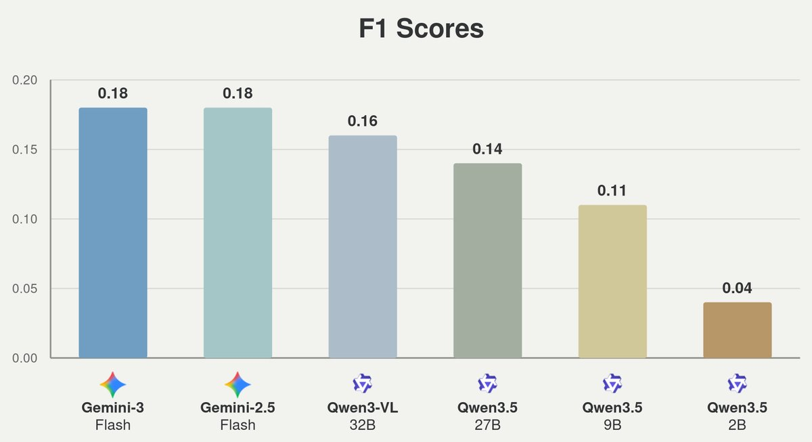
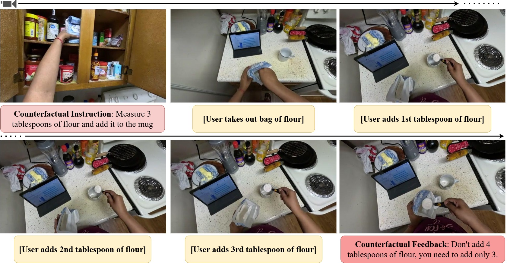
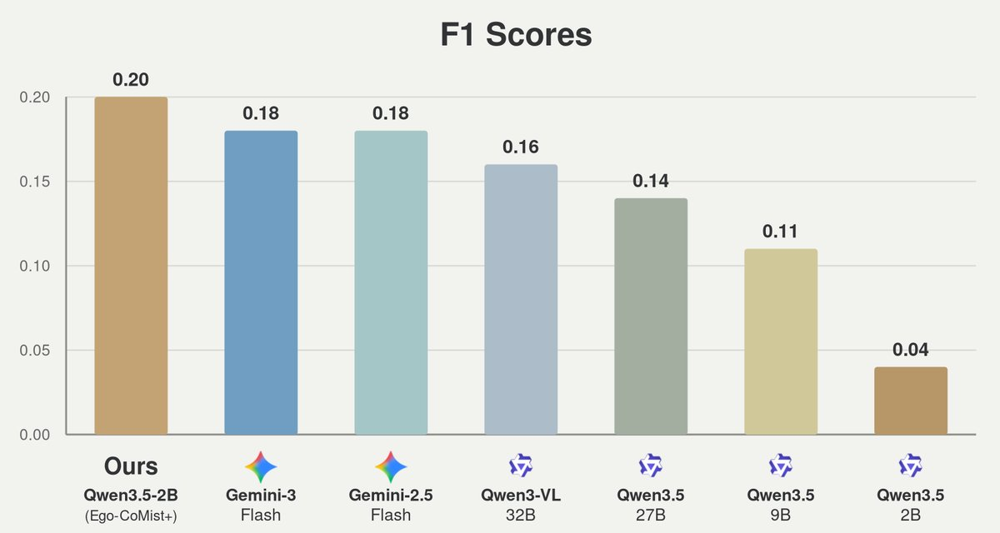

Abstract
Learning everyday skills, like cooking a dish, relies increasingly on instructional media such as online videos. This opens the door to the use of video and multimodal large language models as task guidance assistants. A crucial capability for real-world task guidance is the ability to intervene proactively as soon as a mistake is apparent. To evaluate this capability, we introduce Ego-MC-Bench (Mistake Corrections), a benchmark for reactive, step-by-step task guidance in realistic cooking scenarios. Extensive experiments show that Ego-MC-Bench is highly challenging for state-of-the-art video LLMs. To address the lack of training data for this task, we introduce Ego-CoMist, a counterfactual synthetic dataset created by transforming non-interactive cooking videos into supervised examples showing proactive interventions. Fine-tuning on Ego-CoMist yields gains, especially for smaller and more efficient video LLMs well suited for assistance on edge devices.
Ego-MC-Bench: Mistake Corrections
Ego-MC-Bench evaluates whether AI assistants can intervene at the right time and with the right feedback to prevent mistakes. The benchmark contains expert-provided instruction-feedback pairs in real-world kitchen scenarios, testing both when an intervention should happen and what the assistant should say.
Recording Setup. Ego-MC-Bench is collected in real kitchen scenarios with expert-provided interventions. The setup captures user actions from complementary viewpoints so that mistakes can be timestamped as soon as they become apparent.
Why This Is Hard

Current state-of-the-art video LLMs show very poor mistake intervention capabilities. Even Gemini-3-Flash reaches a mistake intervention F1 score of only 0.18 on per-recipe steps, highlighting the challenge of detecting mistakes at the right time while producing useful corrective feedback.
Ego-CoMist: Counterfactual Mistakes

A major bottleneck is the lack of appropriate procedural activity videos with mistakes, despite the abundance of cooking and instructional video datasets. Ego-CoMist addresses this by transforming non-interactive cooking videos into supervised examples with counterfactual mistakes and corrective feedback.
Fine-Tuning Improves Intervention

Fine-tuning on Ego-CoMist+ significantly improves mistake intervention capabilities. Qwen3.5-2B reaches an F1 score of 0.20 on per-recipe steps, showing strong gains for small models that are practical for low-latency and edge-deployed assistants.
Streaming Evaluation on Ego-MC-Bench
| Instruction | Mistake | |||||
|---|---|---|---|---|---|---|
| Method | IC-Acc ↑ | Prec. ↑ | Rec. ↑ | F1 ↑ | BERT ↑ | ROUGE-L ↑ |
| Per-recipe step | ||||||
| InternVL3.5-38B | 3.9 | 0.00 | 0.00 | 0.00 | 0.000 | 0.000 |
| Qwen2.5-VL-32B | 27.3 | 0.00 | 0.00 | 0.00 | 0.000 | 0.000 |
| Qwen3-VL-8B | 30.7 | 0.00 | 0.00 | 0.00 | 0.000 | 0.000 |
| VideoLLaMA3-7B | 31.8 | 0.00 | 0.00 | 0.00 | 0.000 | 0.000 |
| Qwen3.5-2B | 0.0 | 0.02 | 0.29 | 0.04 | 0.184 | 0.130 |
| Qwen3.5-9B | 6.1 | 0.07 | 0.33 | 0.11 | 0.201 | 0.137 |
| Qwen3.5-27B | 45.5 | 0.12 | 0.17 | 0.14 | 0.206 | 0.137 |
| Qwen3-VL-32B | 6.8 | 0.10 | 0.34 | 0.16 | 0.068 | 0.092 |
| Videollm-online | 2.7 | 0.02 | 0.38 | 0.05 | 0.265 | 0.201 |
| LiveCC | 1.6 | 0.03 | 0.43 | 0.06 | 0.248 | 0.196 |
| Gemini-2.5-Flash | 24.6 | 0.17 | 0.20 | 0.18 | 0.180 | 0.135 |
| Gemini-3-Flash | 32.7 | 0.18 | 0.18 | 0.18 | 0.126 | 0.102 |
| Full recipes | ||||||
| Qwen3.5-27B | 30.3 | 0.05 | 0.13 | 0.07 | 0.201 | 0.136 |
| Qwen3-VL-32B | 6.8 | 0.04 | 0.28 | 0.07 | 0.061 | 0.090 |
| Gemini-3-Flash | 10.6 | 0.05 | 0.20 | 0.08 | 0.097 | 0.091 |
Larger proprietary and open models still struggle to intervene reliably, especially when evaluated over full recipes where errors can compound across steps.
Fine-Tuned Model Evaluation
| Instruction | Mistake | |||||
|---|---|---|---|---|---|---|
| Method | IC-Acc ↑ | Prec. ↑ | Rec. ↑ | F1 ↑ | BERT ↑ | ROUGE-L ↑ |
| Per-recipe step | ||||||
| ProAssist | 3.0 | 0.31 | 0.09 | 0.14 | 0.281 | 0.173 |
| Qwen3.5-2B (QICD) | 28.9 | 0.75 | 0.05 | 0.10 | 0.359 | 0.218 |
| Qwen3.5-2B (Ego-CoMist) | 36.1 | 0.34 | 0.11 | 0.12 | 0.359 | 0.229 |
| Qwen3-VL-2B (Ego-CoMist+) | 30.4 | 0.40 | 0.10 | 0.16 | 0.335 | 0.219 |
| Qwen3.5-0.8B (Ego-CoMist+) | 30.5 | 0.29 | 0.03 | 0.06 | 0.339 | 0.183 |
| Qwen3.5-2B (Ego-CoMist+) | 37.1 | 0.39 | 0.14 | 0.20 | 0.444 | 0.272 |
| Full recipes | ||||||
| ProAssist | 0.2 | 0.00 | 0.00 | 0.00 | 0.000 | 0.000 |
| Qwen3.5-2B (QICD) | 8.2 | 0.18 | 0.04 | 0.06 | 0.347 | 0.161 |
| Qwen3.5-2B (Ego-CoMist+) | 19.7 | 0.30 | 0.08 | 0.13 | 0.433 | 0.278 |
Training with counterfactual mistakes improves both instruction completion and intervention quality. The gains are strongest for efficient 2B-scale models, making Ego-CoMist+ useful for practical assistants.
Citation
@article{bhattacharyya2026streaming,
title={Streaming Interventions: Can Video Large Language Models Correct Mistakes as They Occur?},
author={Bhattacharyya, Apratim and Mahajan, Shweta and Haresh, Sanjay and Yasarla, Rajeev and Pourreza, Reza and Liu, Litian and Garrepalli, Risheek and Memisevic, Roland},
journal={arXiv preprint arXiv:2606.09547},
year={2026}
}